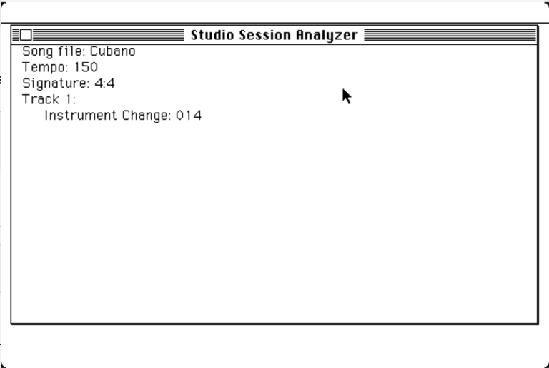

Goal: Load a Studio Session song file (along with its instruments) and play it back, close to the original in a custom game program (eg in an intro splash screen)
Context: Studio Session from Bogas Productions released in 1986. It uses 11 kHz instrument sound samples of arbitrary sizes and mixes up to 6 tracks together to create music that went beyond the default Apple Sound Driver, whose most similar mode of usage featured 4 channels of 256 byte-long sound waves.
Use case if the project comes to completion: This song format has a very mature song editor with the usual Mac GUI frills using standard musical notation. There are nifty tools that allows to re-use chunks of music (phrase library) and repeat some sections. If I can programmatically play back a song, this could be incorporated into a game programming project very easily. Some advanced music could be played back in a title screen or during a non-cpu intensive part of a game (cinematics for example). This was done commercially in some games like Tetris, Falcon F-16 and Vette!, all from Spectrum Holobytes. The code they used would be what the final form of this project strives to reach.
Full defails over at 68kmla: thread
Phase 1 (in progress):
---DONE:
-Load a song file
-Detect basic info: instrument list, master key, master tempo, most proprietary commands
-Use the Sound Driver square-wave synth to play back a channel
---TO DO:
-Create an interface that displays song info
-Select a channel to play back
-Very aggressively cut up the source code into many small files for future management
-Get some timing measurement routines to test out some optimizations
Screenshot of current state (October 1st 2021) 
Current showcasing video:
Last update: 10.01.2021